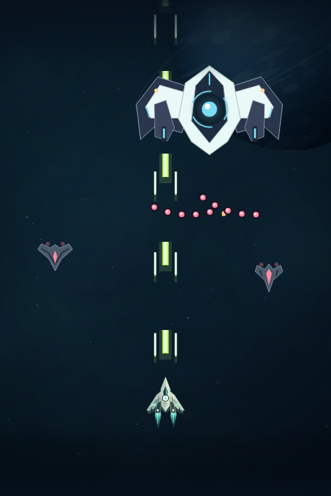
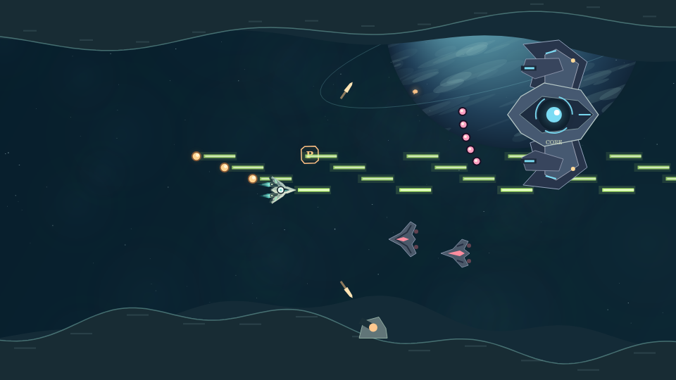

SELECT YOUR FLIGHT
2つの戦場。
1つのシグナル。
弾幕の隙間を縫うか。
自分だけの編隊で、地平を切り拓くか。
2本のシューティング。それぞれの空へ。
01 VERTICAL SHOOTER2 : 3 ↑
ZENITH

DODGE / SWITCH / STRIKESTARWAKE
ZENITHゼニス
弾幕をかすめ、5つの武器で撃ち抜く。
反射と判断がつながる、縦型のハイスピード戦。
縦スクロールで遊ぶ スマホ縦持ち / PC↑
02 HORIZONTAL SHOOTER16 : 9 →
HORIZON

COLLECT / EQUIP / BREAK THROUGHSTARWAKE
HORIZONホライゾン
カプセルを集め、4機のオプションと飛ぶ。
地形と装備を読み解く、横型のクラシック戦。
横スクロールで遊ぶ スマホ横持ち / PC→
01 / JUST PLAY
ログイン不要。射撃はオート。
指のドラッグ、WASD・矢印キーで出撃。
02 / FIND YOUR PACE
3つの難易度と、3つの出撃宙域。
初めてならCADETから。
03 / YOUR OWN RECORD
記録はゲームごとに保存。
BGM・効果音の音量も、それぞれの設定で。